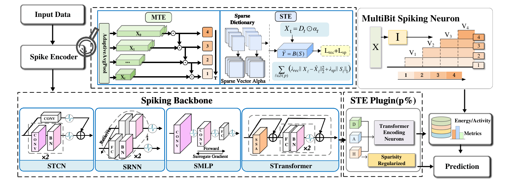
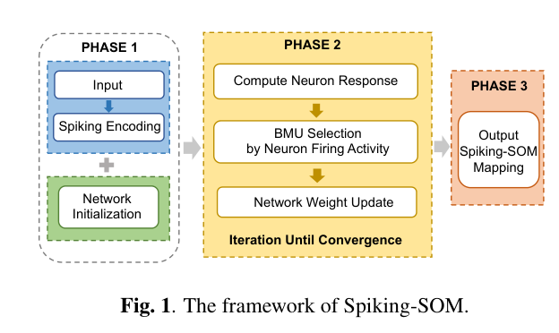
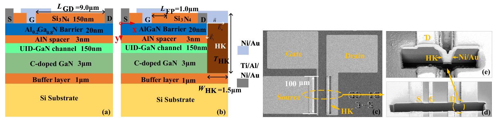

Spiking Learning & Temporal Computing
Learning and temporal representations in spiking networks, from surrogate gradients to multi-scale encoding and sparse inference.
ICML 2026Xidian University · School of Artificial Intelligence
Ph.D. Student in Intelligence Science and Technology
I study learning and temporal computation in spiking neural networks, develop event-driven representations for radar and other continuous signals, and explore semiconductor device models and their connections to neuromorphic hardware.

Learning and temporal representations in spiking networks, from surrogate gradients to multi-scale encoding and sparse inference.
ICML 2026Radar sorting, deinterleaving, and recognition in mixed pulse streams, using unsupervised learning, similarity structure, and event-driven representations.
ICASSP 2026Power-device design through device physics, TCAD, and data-driven models, alongside interests in neuromorphic device models, neuron arrays, and cross-layer design.
Applied Physics Letters 202601 / LEARNING

Enlarge figure ↗Multi-scale and sparse transform encoding organize continuous signals for short-horizon spiking classification.
Membrane-potential statistics guide surrogate-gradient optimization during spiking network training.
02 / SIGNALS

Enlarge figure ↗Spike-domain competitive learning supports unsupervised radar pulse deinterleaving with a self-organizing map.
Adaptive clustering generates pseudo-labels, while similarity learning refines radar cluster relationships across scenarios.
03 / DEVICE

Enlarge figure ↗A high-k trench redistributes drain-side electric fields in GaN-on-Si HEMTs, evaluated through simulation and device measurements.
A CNN surrogate and genetic search explore breakdown-voltage designs for LDMOS, with TCAD verification.